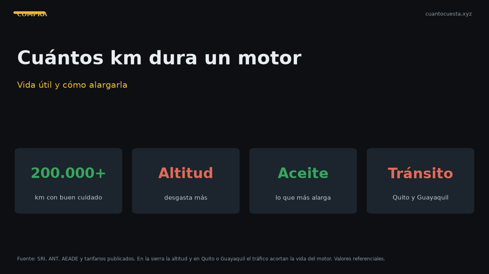

Cuántos kilómetros dura un motor en Ecuador y cómo alargar su vida útil
Un motor bien mantenido dura 200.000-300.000 km. Cómo afectan la altura de la sierra y el tráfico, señales de motor cansado y cuánto cuesta reparar o cambiarlo.

Un motor bien mantenido dura entre 200.000 y 300.000 km, y en algunos casos supera esa cifra. Un motor descuidado puede quedarse a los 120.000. La diferencia no está en la marca: está en el aceite a tiempo, el sistema de enfriamiento y los filtros.
En Ecuador hay dos factores que castigan al motor más que en otros mercados: la altitud de la sierra y el tránsito de Quito y Guayaquil.
Vida útil esperada por tipo de motor y marca
| Tipo de motor | Vida útil referencial (con mantenimiento) |
|---|---|
| Gasolina atmosférico de marca popular | 200.000-300.000 km |
| Gasolina de marcas económicas con repuestos limitados | 150.000-220.000 km |
| Diésel de trabajo (pickup, camión) | 300.000-500.000 km o más |
| Turbo con uso exigente | Muy variable: el mantenimiento es crítico |
| Híbrido (motor de combustión) | Similar, con menos ciclos duros |
Estas cifras son un rango de referencia condicionado al mantenimiento, no una garantía. Dos motores idénticos pueden separarse 100.000 km según cómo se cuidaron.
El motor no se muere de un día para otro: se muere por acumulación de servicios atrasados. El día que falla, el daño empezó miles de kilómetros antes, cuando se postergó el cambio de aceite por "todavía aguanta".
El efecto de la altitud de la sierra
Quito está a 2.850 metros, Cuenca a 2.560 y Ambato a 2.577. A esa altura el aire es menos denso: el motor pierde potencia y trabaja más exigido para el mismo esfuerzo.
Efectos prácticos:
- Más revoluciones para el mismo desempeño, sobre todo en subidas.
- Mezcla más rica: más consumo y más residuos dentro del motor.
- Temperaturas de trabajo más exigentes en trayectos largos de montaña.
- Frenos y transmisión también sufren en pendientes constantes.
Un motor de la sierra puede tener más horas de trabajo efectivo que uno de la costa con el mismo kilometraje en el odómetro.
El efecto del tránsito de Quito y Guayaquil
El tránsito pesado significa arranques y paradas constantes, motor a bajas revoluciones y poco flujo de aire:
- Desgaste por arranque en frío repetido: la mayor parte del desgaste del motor ocurre en los primeros minutos de funcionamiento.
- Aceite que no alcanza su temperatura óptima, favoreciendo residuos y contaminación.
- Muchas horas de motor con poco kilometraje: la medida real de desgaste son las horas de funcionamiento, no solo los km.
Por eso una unidad con "solo 60.000 km" pero cuatro años de trancón diario puede estar más cansada que otra con 100.000 km de carretera.
El mantenimiento que más alarga la vida
Aceite a tiempo
| Tipo de aceite | Intervalo referencial | Costo referencial |
|---|---|---|
| Sintético | 10.000-15.000 km | $50-90 |
| Semisintético | 7.000-10.000 km | $50-90 |
| Mineral | 5.000-7.000 km | $50-90 |
El cambio de aceite es lo más barato que puedes hacer por el motor. Omitirlo es la causa número uno de fallas prematuras.
Enfriamiento
- Revisa nivel y estado del refrigerante con regularidad.
- Atiende cualquier sobrecalentamiento de inmediato: una sola vez puede dañar la culata.
- Revisa mangueras, radiador y termostato en cada mantenimiento periódico.
Filtros
- Aire: un filtro sucio significa más consumo y más desgaste.
- Combustible: protege el sistema de inyección.
- Aceite: se cambia junto con el aceite.
Otros puntos críticos
- Bujías al intervalo del fabricante.
- Correa de distribución ($250-400): si se rompe, puede destruir el motor.
- Sistema de inyección limpio.
- Soportes y correas sin ruidos anormales.
El mantenimiento por kilometraje según tarifario referencial: 10.000 km $333,41 | 20.000 km $434,21 | 30.000 km $489,00 | 40.000 km $595,24 | 50.000 km $689,67 | 60.000 km $799,85, con un costo aproximado de $0,048 por km.
Señales de un motor cansado
- Humo azul constante: consumo de aceite.
- Humo blanco denso: posible refrigerante en la combustión.
- Consumo de aceite entre servicios.
- Pérdida de potencia notoria en subida.
- Golpeteo al ralentí o al acelerar.
- Sobrecalentamiento recurrente.
- Vibración anormal del motor.
- Consumo de combustible claramente mayor al habitual.
Varias de estas señales juntas apuntan a una reparación mayor, no a un simple afinamiento.
El humo blanco denso y constante es la señal más urgente de todas: suele indicar que el refrigerante está entrando a la cámara de combustión. Seguir manejando así puede convertir una reparación de culata en un motor destruido.
Cuánto cuesta un motor nuevo vs. reparar
| Opción | Rango referencial |
|---|---|
| Motor nuevo o armado | Muy variable; suele ser la opción más cara |
| Rectificación o reparación parcial | Depende del daño (culata, anillos, camisas) |
| Motor usado importado | Variable, con riesgo de procedencia |
| Mano de obra | Depende del taller y de la complejidad |
No hay una cifra única: depende del modelo, del daño y de la disponibilidad del repuesto. Un motor de marca con stock local se resuelve más rápido y más barato que uno importado. Pide dos o tres presupuestos por escrito y desconfía de la cifra dicha "de palabra".
Qué kilometraje es riesgoso comprar en un usado
- Menos de 40.000 km: poco riesgoso en motor, pero cuidado con autos "nuevos" con señales de choque o inundación.
- 60.000-120.000 km: el rango más sano si hay historial de servicios.
- 150.000 km o más: requiere revisión mecánica seria; hay unidades perfectas y unidades al borde de una reparación mayor.
- Cualquier kilometraje sin historial: es el verdadero riesgo. El kilometraje importa menos que los documentos.
En Ecuador, además, verifica que el kilometraje sea coherente con el desgaste del pedal, la palanca, el volante y el asiento. Un odómetro "bajado" es una práctica conocida en el mercado de usados.
Cómo revisar el motor de un usado con motor frío
- Llega antes de que el vendedor lo encienda. Un motor precalentado esconde problemas de arranque.
- Escucha el arranque en frío. Debe encender rápido y sin golpeteo.
- Mira el escape. Humo azul, blanco denso o negro sostenido son señales de daño.
- Revisa el aceite en la varilla. Color, nivel y olor. Aceite lechoso indica mezcla con refrigerante.
- Busca fugas bajo el motor y en el cárter: manchas frescas son alerta.
- Haz una prueba de ruta con subida de al menos 15 minutos y luego un escaneo de códigos de error en tu taller.
Resumen práctico
- Un motor cuidado dura 200.000-300.000 km; uno descuidado, mucho menos.
- La altitud de la sierra y el tráfico de Quito y Guayaquil castigan más al motor.
- Lo que más alarga la vida: aceite a tiempo, enfriamiento y filtros.
- Señales de cansancio: humo, consumo de aceite, pérdida de potencia y golpeteo.
- Para reparar o cambiar motor, pide varios presupuestos y compáralos con el valor del auto.
- En un usado, el historial de mantenimiento importa más que el número en el odómetro.
Las cifras y rangos son referenciales y varían por marca, modelo, uso y mantenimiento. Haz siempre una revisión mecánica independiente y verifica el historial del vehículo antes de comprar o de decidir una reparación mayor.
Sigue leyendo
Cómo detectar un carro chocado o inundado en Ecuador
Señales de pintura repintada, óxido en zonas raras, olor a humedad y tornillería marcada: cómo
Precio justo de un carro usado en Ecuador: cómo calcularlo antes de negociar
Método de depreciación anual, uso del avalúo del SRI y señales de estafa para calcular y negoci
Qué revisar antes de comprar un carro usado en Ecuador (checklist completo)
Checklist mecánico, documentos y pruebas para revisar un carro usado en Ecuador antes de pagar:
Transferencia de dominio en Ecuador: pasos, tiempos y errores comunes
Transferencia de dominio en Ecuador: tiempos reales, por qué se cae el trámite (multas, gravame
Cómo verificar que un carro usado no tenga gravámenes ni multas en Ecuador
Cómo consultar gravámenes, reserva de dominio y multas de un carro usado en Ecuador antes de co
Cómo usamos estos datos
Las cifras de esta guía provienen de fuentes públicas oficiales y tarifarios de concesionarios publicados. Los valores son referenciales: tasas municipales, promociones y precios de repuestos varían. Verifica siempre en la entidad o concesionario antes de decidir.